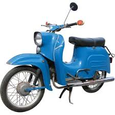
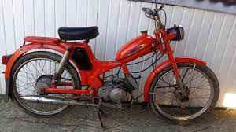
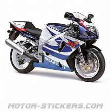

How did it all began
Long long time ago, in a small village of the Eastern Hungary, near by the ukrainian border. A little boy born as a second children in a low middle class family, in the 1980s,
later become the middle children in the 1990s. The story starts as an average of the era in that area, new family tries to find a way
in life in a small village, father with alcohol problems, mother with an abusive father, low income and so.
When it starts to be interesting
As the boy has memories, the father had work far away already, the reason of the low income in local companies could not provide enough to ensure a "good life".
The father have found a job in the capital of Hungary, Budapest around 300km far away from the village. Left to work at sunday afternoon, and get back home at friday evening.
Compare to the situation in the village, the father's income gave hope, even for a low position, as a truck driver in a road construction company.
The mother had a job in the village next door as seamstress.
Life in the country
At that time the communism was the form of government, which had effects on everyone. That ended at the october of 1989
The year 1990 was the first year of democracy, and way bigger corruption began. The privatization did start, and had a huge effect on tho low class.
The russian market did stop export the fruit and vegetables from the county where the village is located.
After that the county became the poorest part of the country, and still struggles ever since.
Life in the village
The parents decided to live in the mother's home village. The mother was 7th of 9 kids, low class family, stay home mother and
alcoholic father how worked as a horse coachman in big city, 100km far away, who been at home only from the weekends.
5 kids have decided to stay in the village, 1 in the parents house, 2 are in the same street, and the other 2 are at the other end of the village.
Work after school hours
Small village, always things to do around a house, and with agriculture soil around it,
the only local option for work was in that factor. The most popular product the apple was in the village,
but beside that was some other side smaller options as well, as cherry, tomato, cucumber and broccoli picking.
The mother got a new job did work in the apple chest factory, and after school time had to go to help, to make the end piece of the chest in 2-3 times a week, and other days the older sibling
did go to, and who left home, had to do the chores.
The big change
A few years later the tobacco showed up on the radar, and become really popular in the village and the neighborhood.
At the beginning was a small amount, like 2500-3000 nm²(0.25-0.3ha), which gave a reasonable profit, and did not take too much time to handle it.
That grown within a few years into 7 ha, and made a 3 family small business. The dads had a main work, and the moms did the main work, and a few kids did help out time to time.
The older sister from the 3 had 2 daughters, and the were the oldest kids as well. The oldest had work already, the younger was busy to find a job yet.
The middle 1 had 3 kids, a girl as a first born, and 2 boys. The 3. had a girl and a boy, whom had difficulties during pregnancy.
For that reason she made clear from the beginning, that she will not take her kids to help, because they are more important then the work itself,
beside that, the parents task to provide to the kids.
The one who remained
The mom and dad favorite the girl was, as a first born, got all the attention, privileges,the better treatment and all the opportunities, positive options.
The treatment got bigger and bigger between the siblings,and a few years later a brother has born, with a 12 years age gap. The boy has stuck d at the middle and fall into the
classic middle child syndrome. He felt lost more then ever before.
Motorbikes as the lifestyle
The situation did not look good, most of the time out of school been spent with work, and chores.
Teenage life such a thing did not existed. The main activity the alcohol was to try to cop with the life.
The only fun activities were the bicycle and the football. The bicycle was the main transport vehicle as well.
The first time
Simson Schwalbe (1980)
The first own one
Romet Komar 2352 (1978)
The reason for a bigger one
ETZ-125 (1992)

The bigger one
ETZ-250 (1983)

The wake up call
Suzuki GSX-R 750 (2000)
The learning bike
Suzuki Gladius (2012)